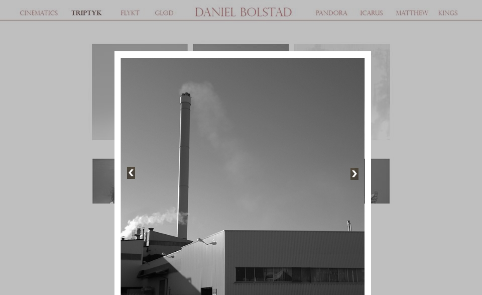

Administrative detaljer
Klientnavn: Daniel Bolstad.
Kunstfotograf.
Hensikt, mål og publikum
Lage en nettside der klienten blir fremmet som kunstner gjennom sine bilder. Nettsiden skal rette seg mot andre kunstnere av alle aldre. Nettsiden skal også legge til rette for salg av bok om mulig.
Navigasjonsstruktur
Nettsiden vil bli framstilt som et galleri. Den første siden brukeren blir møtt med er "inngangsporten", der brukeren kun får mulighet til å gå inn i galleriet. Denne siden vil det ikke være noen muligheter til å gå tilbake til senere. Inne i galleriet har brukeren mulighet til å navigere mellom de ulike bildeseriene samt biografi, kontaktskjema og en egen side med informasjon om boka klienten skal lage. Det vil være mulig å navigere fritt mellom disse via en horisontal meny på toppen av siden.
Sitemap:

Layout og design
I utformingen av designet til siden er det lagt vekt på minimalisme, simplisitet og fokus på bildene. Vi utelukker med en gang banner og oppmerksomhetskrevende bakgrunnsbilder, med unntak av på forsiden der bakgrunnen er en film laget av kunstneren selv. På resten av siden skal det være en lysegrå bakgrunn (#e8e4e4). Dette gjør vi for å ha en mest mulig nøytral bakgrunn med hensyn til innholdet; f. eks. ville ikke en hvit bakgrunn fungert da enkelte av bildene har hvit ramme.
Navigasjonsmeny
For å gi mer fleksibilitet til galleri-innholdets bredde, legger vi navigasjonsmenyen horisontalt på toppen av siden. Lenkene, tittelen og den horistonale linja vil få en rolig, mørkerød farge (#973d3d) som går godt sammen med den grå bakgrunnsfargen. Til tross for ønsket om simplisitet vil vi bruke en antikva font på lenker og tittel for å lage litt konstraster; Trajan Pro. På brødtekst har vi derimot valgt en grotesk font ved navn Kozuka Gothic Pro. Ved å velge en font uten seriffer på brødtekst sikrer vi lesbarhet på skjermer med lav oppløsning.
For å gjøre brukeropplevelsen mer interaktiv og intuitiv, skal vi ha en hover-effekt på menylinkene med et fargeskifte til en mørkere nyanse (#371111).
Rød tråd
Som nesten det eneste designelementet, brukes en rød linje/tråd som går igjen i menyen og i info-siden om fotografen. Gjentakelse av det samme elementet gjøres for å sikre kontinuitet og for å gjøre siden mer enhetlig. Det gir også en vag følelse av dynamikk i en ellers statisk side.
Forsiden
På forsiden prøvde vi å finne en balanse mellom fokus på filmen og fokus på fotografens navn. Det er lagt inn 3 sekunder med svart bakgrunn i begynnelsen av filmen for å fremheve navnet, samtidig som navnet er lagt i det gyldne snitt (horisontalt sett) orientert mot høyre. Det gjør at fokuset bytter til filmen når den starter uten at navnet forsvinner ut av syne.
Responsivt design
Vi ønsker et responsivt design som fungerer på mindre skjermer. Derfor skal følgende skje når skjermen blir for smal til å vise enkelte elementer:
- Elementene i navigasjonsmenyen vil listes vertikalt i stedet for horisontalt.
- Dersom det er nødvendig vil fontstørrelsen minkes, med forbehold om at teksten fortsatt blir lesbar.
- Størrelsen på bilder justeres ned, med forbehold om at bildene krever en hvis oppløsning for at man skal se detaljene i bildene.
- Bildene i bildeseriene vises i én kolonne.
Innhold
1. Forside (index.html)

Forsiden er "inngangsporten" og vil inneholde en video, laget av klienten vår Daniel Bolstad, som går i bakgrunnen uten lyd. Den vil dekke hele siden. Det er en veldig stemningsfull film, og vil gi et kunstnerisk inntrykk. Med stor og tydelig skrift vil det stå ”Daniel Bolstad” og ”Enter” som vil være en hyperlenke som sender brukeren videre.
2. Hovedside (main.html)

Denne siden vil fungere som en hovedside. Her kan man gå videre til de ulike bildeseriene ved å trykke på navnet til serien i den fikserte navigasjonsmenyen på toppen. Menyen vil være lik på alle sidene, men navnet på den aktuelle serien vil være markert ved at menyelementet får en mørkere farge. På hovedsiden vil det være mulig å gå videre til bio.html, about.html, kontakt.html og bok.html. Hovedsiden vil inneholde klientens "artist statement" samt informasjon om eventuelle utstillinger. "Artist statement" vil klienten skrive selv, og vi har ikke mottatt dette enda.
3. Biografi (bio.html)
Denne siden vil inneholde en biografi (tekst) og et bilde av klienten. Bildet vil ha en bredde på 300px og en høyde på 500px. Det vil være plassert litt til venstre for teksten. Siden vil ha samme utforming som hovedsiden. Biografien vil naturligvis skrives i samarbeid med klienten.
4. Bok (bok.html)
Denne siden vil fokusere på boka til klienten, med muligheter til å sende brukeren videre til en ekstern "kjøp og betal"-tjeneste. Dette er noe vi må se nærmere på om er gjennomførbart. Klienten har enda ikke gitt ut en bok, men tenker å gjøre det i løpet av neste år. Derfor vil denne siden være dedikert til denne boken som skal komme, og kommer derfor til å være litt mangelfull frem til det skjer.
5. Kontakt (kontakt.html)
Denne siden vil ha kontaktinformasjon til klienten med kontaktskjema. Det vil stå email og telefonnummer til klienten. Kontaktskjemaet vil bestå av et tekstfelt for navn, et felt for epostadresse og en tekstboks der besøkere kan skrive meldinger som blir sendt til eposten til klienten. Skjemaet vil plasseres midt på siden, godt synlig. Formålet med kontaktskjemaet er at besøkende vil ha en veldig enkel måte å kontakte klienten vår på, uten å måtte gå inn på mail eller sende SMS osv. Verifiseringen av kontaktskjemaet vil gjøres med Javascript.
6. Bildeseriene
Alle bildeseriene vil følge samme stil og oppsett, men med små variasjoner for å reflektere stilen til hver enkelt bildeserie. Dette inkluderer ulik tone på bakgrunnsfarge, samt om det skal vises ett eller to bilder i bredden. Dette vil vi vurdere når vi setter inn bildene i hver serie. Et eksempel på serien "triptyk.html" er vist i bildet under.

For å få følelsen av å gå inn i et galleri når man åpner en bildeserie vil det muligens benyttes en visuell effekt, eksempelvis "fade in". Ved å klikke på et av bildene i en serie skal det komme opp en stor versjon av valgt bilde, med muligheter til å bla seg frem og tilbake i serien ved hjelp av piler på siden av bildet. Når brukeren trykker et annet sted på bildet (altså ikke på pilene) skal bildet lukkes igjen slik at man kommer tilbake til den opprinnelige visningen av bildeserien.
De ulike bildeseriene vil være:
- flukt.html
- glod.html
- icarus.html
- matthew.html
- pandora.html
- kings.html
- triptyk.html
- cintematics.html
Forstørret visning av bilde
Den forstørrede visningen av et enkeltbilde i serien vil se omtrent ut som figuren under. Selve bildeserie-siden vil vises delvis i bakgrunnen, med valgt bilde i forgrunnen. Pilene på sidene navigerer til forrige og neste bilde i serien.
Minstekrav
Javascrip-funksjonaliteter:
- "Fade in"-animasjon ved åpning av bildeserie.
- Verifisering av informasjonen i kontaktskjema.
- Alle felter (navn, epost og melding) må ha innhold.
- Eposten må være på korrekt format (inneholde lokal prefiks, "@" og domene).
- Nedtrekksmeny for kontakt.html, bio.html og bok.html
- Forstørre/forminske et bilde i serievisningen når man trykker på det.
- Dette kan f.eks. gjøres ved å lage et element som default er skjult ("display: none") i html-en, men som blir vist når man trykker på det tilsvarende bildet i bildeserien ("display:block").
- Når brukeren er inne i den forstørrede visningen skal piler vises på sidene av bildet som kan brukes til å bla til forrige og neste bilde i serien.
Plan
| Side | Arbeidsoppgave | Hovedansvar | Frist |
|---|---|---|---|
| index.html | Erik | Okt. 20 | |
| bio.html | Jakob | Okt. 20 | |
| kontakt.html | Jakob | Okt. 20 | |
|
cinematics.html flukt.html glød.html icarus.html matthew.html pandora.html kings.html |
Lage felles navigasjonsmeny | Torjus, Ingrid | Okt. 20 |
| bok.html | Erik | Okt. 31 | |
| main.html | Erik, Sondre | Okt. 20 | |
| designelementer | Fonter, header, meny, enterknapp, skisser | Sondre | Okt. 8 |
| style.css | Alle | Nov. 5 | |
| JavaScript | Sondre | Nov. 11 |
Planen er å gjøre ferdig html-sidene først, da det er lettere å se designet når innholdet er klart. Deretter er planen å jobbe med CSS og til slutt implementere JavaScript funksjonene. Det kommer allikevel til å bli jobbet med litt parallelt da det er viktig at kommunikasjonen mellom både innhold, design og funksjoner fungerer optimalt. I tillegg er det garantert behov for finjusteringer på slutten. Vi har derfor valgt å legge fristene et par dager før oppgavens frister.
Vi har allerede motatt videoen og alle bildeseriene fra klienten og fått beskjed om hvordan han ønsker de komprimert på hjemmesiden. Det eneste vi mangler er et bilde og teksten som skal inn i biografien, teksten til "artist statement" og eventuelt et bilde som skal representere boken som skal selges.